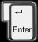
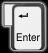
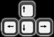
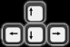
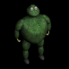
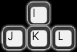
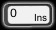
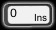

| |
|
 |
|
| Introduction Controls Bonuses Enemies Editor Credits | |
|
|
IntroductionWelcometo manual pages of game Bombic. Bombic is game like Bomberman a Dynablaster. It has large story part and of course deadmatch part. It is possible to play in up to four players on one computer. You can play also story play in more players. Story play is focused on killing monsters. The game has large story playing and of course deathmatch. You can play in up to four player at one time on one computer. We wanted to create interesting game, so we created three different lands many enemies and different kinds of bonuses. |
ControlsMenuFor selecting in menu use .
To confirm your selection use  or .
To confirm your selection use  or  .
If it is changeable value, you can also use .
If it is changeable value, you can also use  .
You can move one screen up by pressing .
If you pressi it main menu, the game quits.
Menu is created to be easy to use it. We hope that you won't get lost in menu. .
You can move one screen up by pressing .
If you pressi it main menu, the game quits.
Menu is created to be easy to use it. We hope that you won't get lost in menu.
Possibilities of settingLanguage - EN / CZ / DEExplosion presumption Yes / No Limited deathmatch Yes / No Game Speeg 1.0 - 4.0 FullScreen Yes / No Sound On / Off Game controls Player 1 -  Player 1 -    Player 2 - Player 2 -   Player 3 -   Player 4 - Player 4 -    Change game speed Pause  Quit |
BonusesLike every other bomberman game also our Bombic has many bonuses, which helps you to kill your enemies easyer. We tryed to add all important and known. Bonuses will be avalable in sigle player in this ored. Some of them can be used only in deathmatch because they are too strong. Bonus apears on destroyed ground. In storyplaing the apears randomly and in deathmatch allways. They can be devided in still bonuses (it is enough to take them once) time bonuses (their effect disapear after a little time) and one time bonuses. You can have only one time bonus at one time. If you have time bonus and you take another time bonus, the effect of the onld one will disapear and only the new one is active. It is very usefull when you have illness - it can be cured this way.
|


MonstersYou need some evil monster to play on your own. We have prepared a lot of them for you. The differ in speed, intelligence, number of lives and by picture. If the monster has more lives, it lessens after every hit.
|


Editor
| We decided to give you with the game also editor. You can completly change the game using this editor. But it can be dangerous to use it. We recomend you to backup game data before you demage them. You use editor at your own risk. Maps can be saved in directory maps or in the same directory as bombic.exe. Originaly the editor was only for us, so it isn't too user friendly. When you create deathmatch map, don't forget to set the map as deathmatch in menu->file->properties. |
Credits
|
Programming and coordinating Bernard Lidický Art and design Zdenek Böswart Betatester Vosy Jiricek |